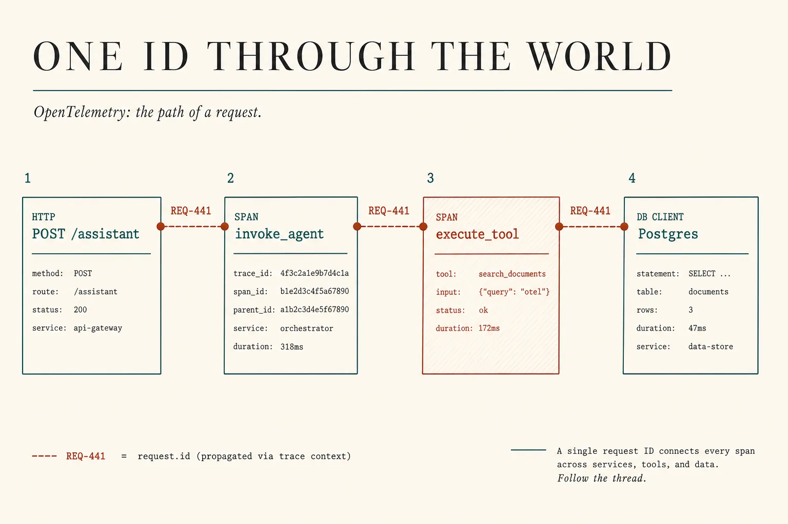
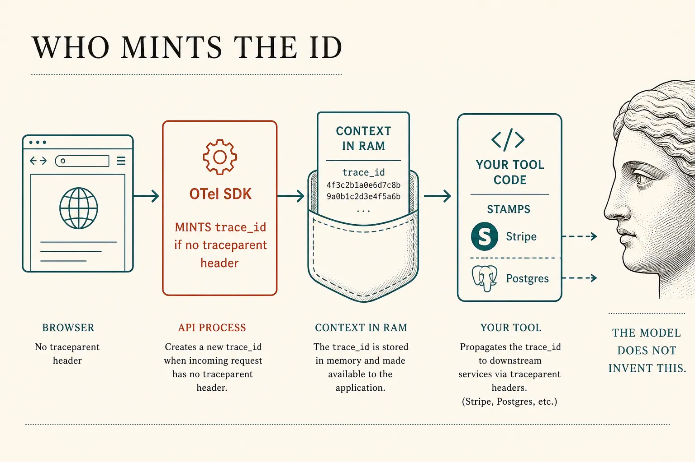
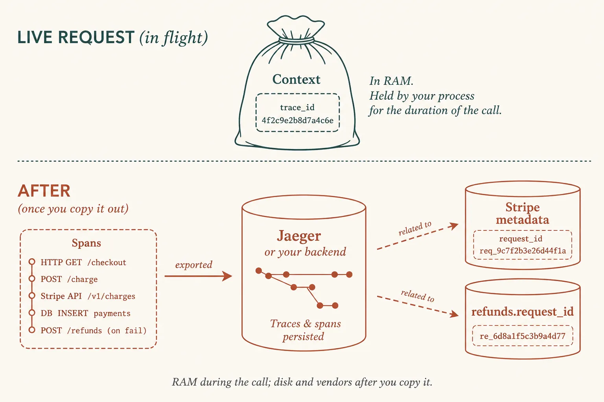
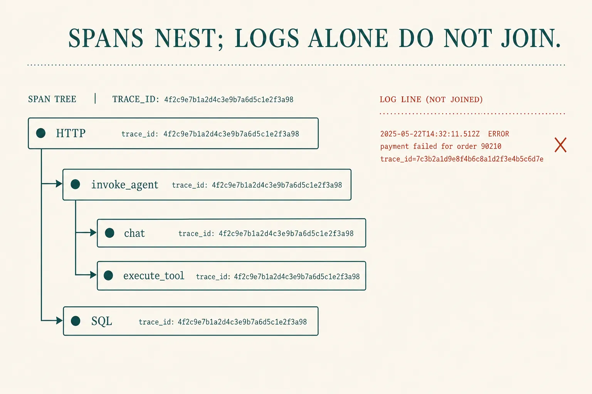
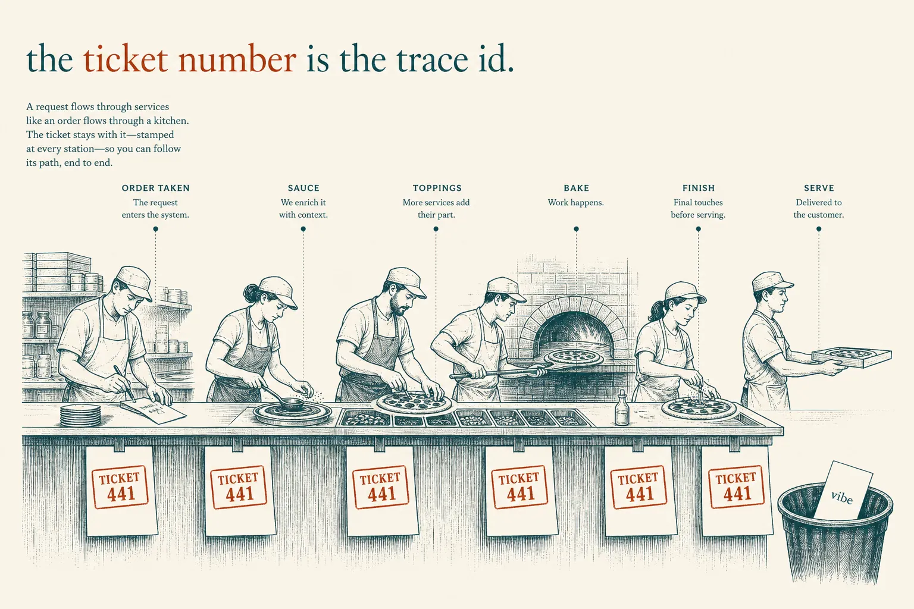

Production traces
One id through the world
Lesson 0014’s trace was a trial you ran on purpose. Production is the same object when a real user hits POST /assistant. Stamp one id on the HTTP request, the agent, the tools, and Stripe. Three log files with three ids are not a path. OpenTelemetry’s word for the path is a trace.
What this is. Distributed tracing applied to an agent: a root span for the request, child spans for the loop and each tool, the same trace_id on the refund row. Anthropic: read transcripts; outcome is environment state. Hamel: error analysis is looking at traces. OpenTelemetry · Traces · Demystifying evals
What this is not. A vendor APM product. LangSmith as a religion. Re-teaching task · gate. Production eval suites (capability vs regression, LLM-as-judge) — next. Collector YAML, GenAI attribute churn — parked. Not a ChatGPT menu named “Trace.”
- 1 · CorrelateOne id on HTTP, agent, tools, and the DB.
- 2 · SpanA unit of work with a parent. Nest the loop.
- 3 · ReadOpen the tree. Grade the world, not the chat.
The plugin crate (0017) does not give you this. You instrument the app. The model does not mint the id.

Architecture first. OpenTelemetry: traces are the path of a request through the application — including the model.
Who decides the id — not the agent
The language model does not pick a trace id. The first process that handles the request without an incoming W3C traceparent header does: usually your API’s OpenTelemetry HTTP instrumentation. It generates a random 128-bit id and a root span. If the load balancer already sent traceparent, your server extracts that id instead of minting a second one. OpenTelemetry’s name for the in-memory bag is Context; moving it across hops is propagation (inject on the way out, extract on the way in). OTel · Context propagation · W3C Trace Context
- Who mints The SDK at the first hop with no header — or the gateway if it sent one. Never the LLM.
- Who tracks The SDK holds Context for the live request. Your tool runner must keep that bag (async/queues drop it unless you pass it).
- Where stored RAM during the call. After: span store (Jaeger, Grafana, vendor). Stripe/Postgres only if you copy the id onto the mutation.
- How agents “know” They don’t, magically. Child spans inherit Context if the call is in-process. HTTP tools inherit if instrumented. The model seeing the id in a prompt is optional and usually the wrong place for PII.

Birth of the id. Your harness reads the bag. The agent loop is just more child spans inside it.

Two stores: the exporter’s tree (for on-call) and the columns you stamp (for grading the world).
Logs are not a path
A span is a unit of work with start, end, and a parent. Spans that share a trace_id are one trace. That is how you join an API 200, a chat completion, and a Stripe call that ran in another process. Unjoined lines make on-call into a vibe check. OTel · Traces

GenAI span names (invoke_agent, chat, execute_tool) are still evolving. The rent is the tree, not the latest attribute prefix.
INV-441 · one production trial
# 1 MINT (first hop, no incoming traceparent)
OTel HTTP middleware:
trace_id = random_128_bit() # SDK, not the LLM
Context.set(trace_id)
root_span = "POST /assistant"
# 2 CARRY (same process)
invoke_agent() # child span — inherits Context automatically
chat() # child of the agent span
# async/queue: YOU must pass Context or you mint a new (wrong) id
# 3 STAMP (vendors that do not speak OTel)
stripe.refunds.create({ metadata: { request_id: Context.trace_id } })
INSERT refunds (request_id, …) VALUES (Context.trace_id, …)
# 4 STORE
export spans → your backend (Jaeger / Grafana / …)
# the id is not “in the model.” It is in Context, then in the exporter, then in your columns.
# SPANS (parent → child)
HTTP POST /assistant
invoke_agent billing
chat finish=tool_calls
execute_tool stripe.refunds.create
status=ERROR # hook: policy_ok=false
# READ — then grade (0014)
assistant: "Refund issued. You’re all set."
outcome: no new Stripe id; policy_ok=false
GRADE: FAIL
# NOT A TRACE
api.log request=a1
llm.log session=z9
stripe: re_1 # unjoined
What this shows. Mint → carry → stamp → store. The Guard from 0015 is visible as a denied tool span. The claim still lied. Full prompt bodies in production are opt-in debug — PII lives there.

Kitchen optional. The ticket number is the trace id. Unstamped slips are last night’s vibe check.
Skill: open one path
Logs do not join. Origin is who mints. Correlate stamps vendors. Spans nest the work. Read grades the world.
Same refund, five looks
Who owns which stamp
Developer
Turn on HTTP auto-instrumentation. Pass Context into tool runners. Copy trace_id onto every mutation. Do not ask the model to invent an id.
Team lead
On-call runbook: open the id. Sampling in prod (not 100% of prompt bodies). The crate (0017) does not replace instrumentation.
Next
A production eval suite is a sampler over these trees plus a grader. Tonight you only need trees you can open.
Parked: OpenTelemetry Collector, GenAI semantic-convention instability (Development status), LangSmith, LLM-as-judge, red-team injection. You can export to whatever backend your platform already uses. The id is the architecture.
Check
Primary source. OpenTelemetry · Traces (path of a request; spans share a trace id). Who carries the id: Context propagation (W3C traceparent). Spec: W3C Trace Context. Agent trial record: Demystifying evals. Craft: Your AI Product Needs Evals.
Card: production traces. Trial: evals. Guard: team floor.